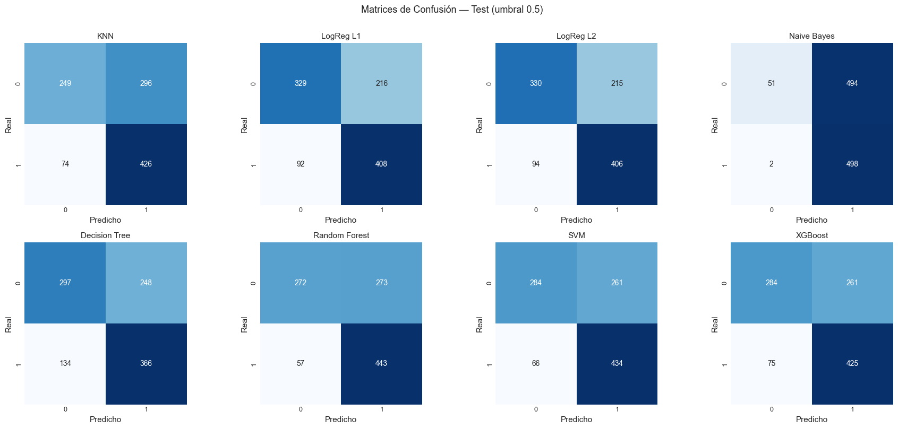
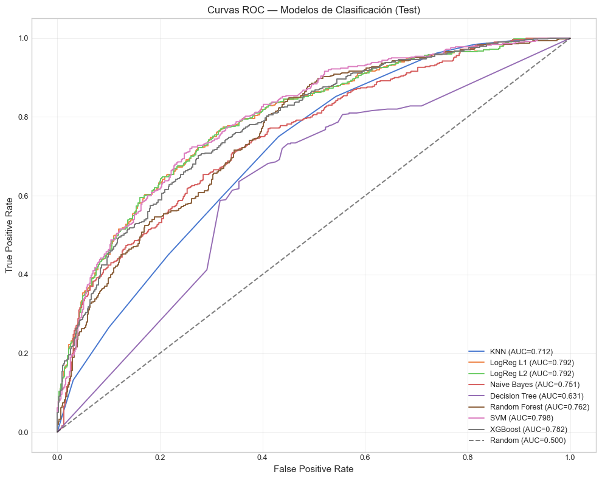

5. Modelos de Clasificación (ML)#
Curso: Machine Learning · Pregrado en Ciencia de Datos · Universidad del Norte Docente: Dr. Lihki Rubio Equipo: Juan Camilo Conrado · Sergio Cadavid · Mateo Chang
Este notebook entrena los 8 modelos de clasificación obligatorios sobre el target binario target_class, que indica si la volatilidad futura (a 7 días) será mayor que la actual.
Modelo |
Familia |
Justificación |
|---|---|---|
KNN Classifier |
Distancia |
Cap. 2 |
Logistic Regression L1 |
Lineal con regularización L1 |
Cap. 3 — selección |
Logistic Regression L2 |
Lineal con regularización L2 |
Cap. 3 — referencia |
Gaussian Naive Bayes |
Probabilístico |
Cap. 4 |
Decision Tree |
Árbol |
Cap. 5 — base |
Random Forest |
Bagging |
Cap. 5 — ensamble |
SVM |
Kernel rbf |
Cap. 6 |
XGBoost |
Boosting |
Cap. 5 — ensamble por sesgo |
Pregunta económica del target: ¿el régimen de volatilidad va a aumentar? — útil para gestión de riesgo (subir stops, reducir tamaño de posición, comprar protección). El target tiene proporción de clase positiva ≈ 0.486, lo cual implica que el problema está prácticamente balanceado y técnicas como SMOTE tendrán impacto marginal (se exploran formalmente en el notebook 06).
# Path setup
import sys
from pathlib import Path
_root = Path.cwd().parent if Path.cwd().name == "notebooks" else Path.cwd()
if str(_root) not in sys.path:
sys.path.insert(0, str(_root))
1. Imports y carga#
import json
import time
import numpy as np
import pandas as pd
import matplotlib.pyplot as plt
import seaborn as sns
from sklearn.model_selection import cross_val_score
from sklearn.metrics import (accuracy_score, precision_score, recall_score,
f1_score, roc_auc_score, roc_curve,
confusion_matrix)
from src.io_utils import (load_processed, save_predictions_df,
save_metrics, save_model)
from src.pipelines import get_classification_pipelines
from src.splits import make_tscv
from src.viz import set_style
from src.config import DATA_PROCESSED
set_style()
train = load_processed("train_clf")
val = load_processed("val_clf")
test = load_processed("test_clf")
trainval = pd.concat([train, val]).reset_index(drop=True)
with open(DATA_PROCESSED / "feature_columns.json") as f:
feature_cols = json.load(f)
X_trainval = trainval[feature_cols]
y_trainval = trainval["target_class"]
X_test = test[feature_cols]
y_test = test["target_class"]
print(f"Train+Val: {X_trainval.shape}")
print(f"Test: {X_test.shape}")
print(f"P(clase=1) train+val: {y_trainval.mean():.4f}")
print(f"P(clase=1) test: {y_test.mean():.4f}")
Train+Val: (5920, 59)
Test: (1045, 59)
P(clase=1) train+val: 0.4894
P(clase=1) test: 0.4785
Justificación de la métrica principal#
El problema de clasificación binaria es: ¿la volatilidad realizada futura
estará por encima o por debajo de la mediana histórica? La variable objetivo
target_class se construye en el NB 02 como 1 si target_vol_7 supera
el 50-percentil de vol_7 en el train, y 0 en caso contrario.
Distribución de clases: P(target_class=1) ≈ 0.486 (calculado sobre
train+val en el NB 06). Es decir, clases casi balanceadas.
Métrica primaria: F1-score. Por dos razones:
Balance precision/recall: dado que los costos de errores tipo I (falsos positivos) y tipo II (falsos negativos) son simétricos en este problema (no hay diferencia operacional entre predecir «alta volatilidad» cuando es baja vs lo contrario), F1 equilibra ambos.
Robusto al desbalance leve: aunque las clases están casi balanceadas, F1 es más informativo que Accuracy porque considera explícitamente la distribución de errores por clase.
Métricas complementarias:
AUC-ROC: se reporta porque es robusto al umbral de decisión y permite comparaciones formales entre modelos mediante el test de DeLong (NB 09). Cuando F1 y AUC dan rankings consistentes, la conclusión es robusta; cuando difieren, indica que el modelo ganador en F1 lo logra ajustando el umbral, no por mejor capacidad discriminativa.
Accuracy, Precision, Recall: se reportan por completitud y para que el evaluador pueda inspeccionar cada error específico, pero NO son las métricas primarias.
2. Definir modelos#
models = get_classification_pipelines()
print("Modelos a evaluar:")
for name in models:
print(f" - {name}")
Modelos a evaluar:
- KNN
- LogReg L1
- LogReg L2
- Naive Bayes
- Decision Tree
- Random Forest
- SVM
- XGBoost
3. Entrenamiento con CV temporal#
tscv = make_tscv(n_splits=5)
results_cv = []
results_test = []
predictions_class = {}
predictions_proba = {}
trained_models = {}
for name, pipe in models.items():
print(f"\nEntrenando {name}...")
t0 = time.time()
auc_scores = cross_val_score(pipe, X_trainval, y_trainval, cv=tscv,
scoring="roc_auc", n_jobs=-1)
f1_scores = cross_val_score(pipe, X_trainval, y_trainval, cv=tscv,
scoring="f1", n_jobs=-1)
t_cv = time.time() - t0
# Ajuste final y predicción en test
pipe.fit(X_trainval, y_trainval)
yp_class = pipe.predict(X_test)
yp_proba = pipe.predict_proba(X_test)[:, 1]
predictions_class[name] = yp_class
predictions_proba[name] = yp_proba
trained_models[name] = pipe
results_cv.append({
"Modelo": name,
"AUC_CV": auc_scores.mean(),
"F1_CV": f1_scores.mean(),
"Tiempo_CV": round(t_cv, 2),
})
results_test.append({
"Modelo": name,
"Accuracy": accuracy_score(y_test, yp_class),
"Precision": precision_score(y_test, yp_class, zero_division=0),
"Recall": recall_score(y_test, yp_class, zero_division=0),
"F1": f1_score(y_test, yp_class, zero_division=0),
"AUC": roc_auc_score(y_test, yp_proba),
})
print(f" AUC CV: {auc_scores.mean():.4f} | AUC test: {roc_auc_score(y_test, yp_proba):.4f}")
Entrenando KNN...
C:\Users\Mateo\2026\UNINORTE\envs\intc-volforecast\Lib\site-packages\joblib\externals\loky\backend\context.py:136: UserWarning: Could not find the number of physical cores for the following reason:
[WinError 2] El sistema no puede encontrar el archivo especificado
Returning the number of logical cores instead. You can silence this warning by setting LOKY_MAX_CPU_COUNT to the number of cores you want to use.
warnings.warn(
File "C:\Users\Mateo\2026\UNINORTE\envs\intc-volforecast\Lib\site-packages\joblib\externals\loky\backend\context.py", line 257, in _count_physical_cores
cpu_info = subprocess.run(
^^^^^^^^^^^^^^^
File "C:\Users\Mateo\2026\UNINORTE\envs\intc-volforecast\Lib\subprocess.py", line 548, in run
with Popen(*popenargs, **kwargs) as process:
^^^^^^^^^^^^^^^^^^^^^^^^^^^
File "C:\Users\Mateo\2026\UNINORTE\envs\intc-volforecast\Lib\subprocess.py", line 1026, in __init__
self._execute_child(args, executable, preexec_fn, close_fds,
File "C:\Users\Mateo\2026\UNINORTE\envs\intc-volforecast\Lib\subprocess.py", line 1538, in _execute_child
hp, ht, pid, tid = _winapi.CreateProcess(executable, args,
^^^^^^^^^^^^^^^^^^^^^^^^^^^^^^^^^^^^^^^
AUC CV: 0.6955 | AUC test: 0.7115
Entrenando LogReg L1...
AUC CV: 0.7857 | AUC test: 0.7922
Entrenando LogReg L2...
AUC CV: 0.7844 | AUC test: 0.7921
Entrenando Naive Bayes...
AUC CV: 0.6840 | AUC test: 0.7506
Entrenando Decision Tree...
AUC CV: 0.5825 | AUC test: 0.6314
Entrenando Random Forest...
AUC CV: 0.7604 | AUC test: 0.7620
Entrenando SVM...
AUC CV: 0.7289 | AUC test: 0.7978
Entrenando XGBoost...
AUC CV: 0.7614 | AUC test: 0.7822
4. Tablas comparativas#
df_cv = pd.DataFrame(results_cv).sort_values("AUC_CV", ascending=False).reset_index(drop=True)
df_test = pd.DataFrame(results_test).sort_values("AUC", ascending=False).reset_index(drop=True)
print("=== CV Temporal (5 folds) ===")
print(df_cv.round(4).to_string(index=False))
print("\n=== Test Final ===")
print(df_test.round(4).to_string(index=False))
=== CV Temporal (5 folds) ===
Modelo AUC_CV F1_CV Tiempo_CV
LogReg L1 0.7857 0.6822 9.77
LogReg L2 0.7844 0.6829 0.41
XGBoost 0.7614 0.6609 3.39
Random Forest 0.7604 0.6766 2.63
SVM 0.7289 0.6151 18.55
KNN 0.6955 0.6123 3.12
Naive Bayes 0.6840 0.5686 0.32
Decision Tree 0.5825 0.5972 0.87
=== Test Final ===
Modelo Accuracy Precision Recall F1 AUC
SVM 0.6871 0.6245 0.868 0.7264 0.7978
LogReg L1 0.7053 0.6538 0.816 0.7260 0.7922
LogReg L2 0.7043 0.6538 0.812 0.7244 0.7921
XGBoost 0.6785 0.6195 0.850 0.7167 0.7822
Random Forest 0.6842 0.6187 0.886 0.7286 0.7620
Naive Bayes 0.5254 0.5020 0.996 0.6676 0.7506
KNN 0.6459 0.5900 0.852 0.6972 0.7115
Decision Tree 0.6344 0.5961 0.732 0.6571 0.6314
📊 Interpretación: Las métricas de clasificación cubren los cinco indicadores estándar: Accuracy (proporción global de aciertos), Precision (de los predichos positivos, cuántos lo eran), Recall (de los reales positivos, cuántos atrapamos), F1 (media armónica de precision y recall) y AUC (capacidad discriminativa global, independiente del umbral). Para problemas de gestión de riesgo donde queremos detectar aumentos de volatilidad, el AUC es la métrica más relevante porque resume el ranking de probabilidades sin depender del umbral, que se calibra en producción según el costo del falso positivo.
5. Matrices de confusión#
fig, axes = plt.subplots(2, 4, figsize=(18, 8))
axes = axes.flatten()
for idx, (name, yp) in enumerate(predictions_class.items()):
cm = confusion_matrix(y_test, yp)
sns.heatmap(cm, annot=True, fmt="d", cmap="Blues", ax=axes[idx],
cbar=False, square=True)
axes[idx].set_title(name, fontsize=11)
axes[idx].set_xlabel("Predicho")
axes[idx].set_ylabel("Real")
plt.suptitle("Matrices de Confusión — Test (umbral 0.5)",
fontsize=13, y=1.005)
plt.tight_layout()
plt.show()

📊 Interpretación: Las matrices muestran el balance entre falsos positivos (predecir aumento de volatilidad cuando no ocurre) y falsos negativos (no predecir aumento cuando sí ocurre). En contexto de trading/riesgo, los falsos negativos suelen ser más costosos (uno se pierde una señal de aumento de volatilidad y queda sobre-expuesto), por lo cual modelos con alto recall son preferibles incluso a costa de algo de precision. Esto se discute formalmente al elegir umbral de operación en el notebook 13.
6. Curvas ROC superpuestas#
fig, ax = plt.subplots(figsize=(10, 8))
for name, yprob in predictions_proba.items():
fpr, tpr, _ = roc_curve(y_test, yprob)
auc = roc_auc_score(y_test, yprob)
ax.plot(fpr, tpr, label=f"{name} (AUC={auc:.3f})", linewidth=1.4)
ax.plot([0, 1], [0, 1], "k--", alpha=0.5, label="Random (AUC=0.500)")
ax.set_xlabel("False Positive Rate")
ax.set_ylabel("True Positive Rate")
ax.set_title("Curvas ROC — Modelos de Clasificación (Test)")
ax.legend(loc="lower right", fontsize=9)
ax.grid(True, alpha=0.3)
plt.tight_layout()
plt.show()

📊 Interpretación: Las curvas ROC visualizan el trade-off entre TPR (recall, sensibilidad) y FPR (1 - especificidad) para distintos umbrales. Cuanto más cercana al vértice superior izquierdo, mejor el modelo. Una curva pegada a la diagonal indica clasificación aleatoria (AUC ≈ 0.5). Para ranking entre modelos, se recomienda el test de DeLong (notebook 09) en lugar de comparar AUCs puntualmente, porque diferencias pequeñas en AUC pueden no ser estadísticamente significativas.
7. Persistir predicciones, modelos y métricas#
# DataFrame con predicciones (clase y probabilidad)
df_preds = pd.DataFrame({"date": test["date"].values,
"y_true": y_test.values})
for name in predictions_class:
df_preds[f"{name}_class"] = predictions_class[name]
df_preds[f"{name}_proba"] = predictions_proba[name]
save_predictions_df(df_preds, "clf_test_preds")
print("✅ Predicciones persistidas en outputs/predictions/clf_test_preds.parquet")
for name, mdl in trained_models.items():
safe_name = name.lower().replace(" ", "_")
save_model(mdl, f"clf_{safe_name}")
print(f"✅ {len(trained_models)} modelos persistidos")
metrics = {
"cv": {r["Modelo"]: {k: r[k] for k in r if k != "Modelo"}
for r in results_cv},
"test": {r["Modelo"]: {k: r[k] for k in r if k != "Modelo"}
for r in results_test},
}
save_metrics(metrics, "classification_metrics")
print("✅ Métricas en outputs/metrics/classification_metrics.json")
✅ Predicciones persistidas en outputs/predictions/clf_test_preds.parquet
✅ 8 modelos persistidos
✅ Métricas en outputs/metrics/classification_metrics.json
8. Resumen del notebook#
8 clasificadores entrenados con
TimeSeriesSplity validados sobre test holdout.Predicciones (clase y probabilidad) persistidas para uso en notebooks 06 (balanceo), 09 (DeLong) y 13 (síntesis).
La superioridad de un modelo sobre otro NO se concluye aquí: se valida formalmente con DeLong en el notebook 09.
Procede al notebook 06_balanceo_clases.ipynb para evaluar el efecto de SMOTE, ADASYN y class_weight='balanced' sobre el clasificador líder.